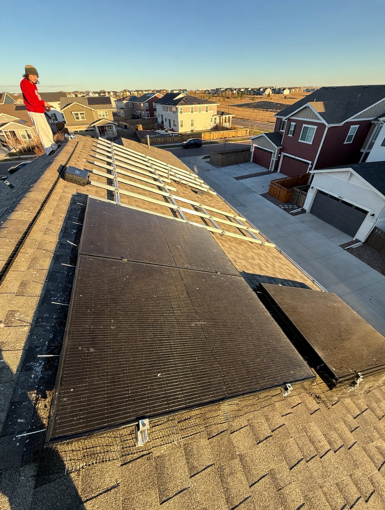

Solar Detach & Reset
Solar Detach & Reset for Your Re-Roof
Your roofers don't do solar — and they shouldn't have to. Mile High Solar Care removes your panels before the roof work, puts them back after, and handles the permit, the inspections, and the paperwork for your exact address. One flat quote, with permits shown as their own line item — never buried, never discovered after the job is sold.
A re-roof is the one home project that runs straight through your solar system. The panels have to come off before the first shingle is torn off, and they have to go back on — correctly, legally, and producing — after the new roof is on.
What most homeowners find out too late is that the rules for that removal and reinstallation are different in every city on the Front Range. One city requires a dedicated permit and an inspection. The next requires no permit at all for putting your own panels back. A third requires a permit to be in hand before a single panel is lifted. A contractor who quotes you a firm permit line without checking your address first is guessing with your money.
We're Jeremy and Meral Runnels — a husband-and-wife solar care company serving the Denver metro and the Front Range. Detach and reset is core work for us: we service systems we didn't install, we document everything with photos, and our installation workmanship is guaranteed for the life of the array.
How it works — the process
- Photo review and permit check first. Send us photos of your system, or we'll come look. Before we price anything, we check the permit rules for your exact address — city versus county jurisdiction changes the answer, and a mailing address doesn't always settle which one you're in.
- One flat quote. You get a single flat number for the detach and reset, with permits & permit handling as an explicit line item — the published permit fee for your jurisdiction, plus the filing, inspection, and closeout time. Where a licensed electrical contractor must pull or sign, our electrical partner is named in the contract and that work is priced into the same line.
- Detach day. We photograph the system as installed, then remove the panels and racking hardware your roofer needs cleared. Where your jurisdiction requires a pre-inspection before removal, that happens first — it's scheduled into the plan, not discovered mid-job.
- Your roofer roofs. The roof is theirs; the solar is ours. We coordinate timing with your roofing crew so the reset is booked against their completion, not guessed at.
- Reset. Panels go back on, remounted to the original layout, reconnected, and checked. If anything was damaged or needs repair while the system is open, you approve that work before it happens — and in some jurisdictions a repair changes the permit path, which we'll tell you about before, not after.
- Closeout. Inspections passed, affidavit filed, or meter released — whatever your city requires to close the job out properly — and you get the photo record of the finished array, producing again.
What affects your quote
Detach and reset is quoted per job, because no two are the same job. The things that move the number:
- System size and layout — panel count, number of arrays, and how the racking is configured.
- Roof access — stories, pitch, and how panels can be safely staged.
- Your jurisdiction's permit path — fees and steps range from no permit at all to dual permits with a pre-removal inspection (see the table below).
- Condition findings — damaged panels, worn racking, or wiring issues found at detach. Repairs are quoted and approved separately; nothing is folded in silently.
- Electrical scope — where the permit or the work itself requires a licensed electrical contractor, our EC partner performs and warranties that portion.
- Scheduling — how tightly the detach and reset need to bracket your roofer's dates.
While the panels are down is also the easiest moment your system will ever offer for two other jobs: a full panel cleaning (our published tiers run $129–$249 by panel count) and critter guard installation (typically $1,095–$1,195, with a lifetime workmanship guarantee). Both are optional, both are quoted in writing, and neither is required to get your reset done right.
Permits — handled, and shown on the quote
Every Mile High Solar Care detach-and-reset quote starts with a permit check for your exact address, and permits & permit handling appear as their own line item on the quote. Never absorbed, never a surprise.
Here is what Front Range jurisdictions actually publish — checked against each building department's own pages in November 2026:
| Jurisdiction | What detach & reset requires | Published permit fee |
|---|---|---|
| Westminster | A permit is required — the city expressly names "removal and replacement" of a solar PV system. Filed through eTRAKiT with a site plan, roof layout, and 3-line diagram. | $300 flat |
| Broomfield | A dedicated Solar Panel Removal and Replacement permit, closed out with the city's Solar PV Reinstallation Affidavit — signed by the electrician (with state license number) and the homeowner, and accepted in lieu of a final inspection. One catch: the affidavit certifies the system was not altered in any way, so if anything gets repaired, added, removed, or relocated during the job, the affidavit path no longer applies. | $70 flat |
| Thornton | No building permit for the reinstallation itself — "Existing Solar PV reinstallation" is on the city's official list of projects that do not require one. (A new system, and the re-roof itself, are separate matters.) | None for the reinstallation |
| Unincorporated Jefferson County | An electrical permit is required by code — the county's Residential Code Supplement states it in one sentence: "The removal and reinstallation of solar panels shall require an electrical permit." | Per county fee schedule |
| Colorado Springs (Pikes Peak Regional Building Dept.) | Both a building permit and an electrical permit, in addition to the roofing permit — and the detach-and-reset permit must be in hand before arrays are detached. Older systems with no permit history on file require a pre-inspection before removal to document what's installed. Panels must be remounted equal to or better than the original installation; older systems are not required to be brought up to current code. | Per RBD fee schedule |
| Erie | A dedicated detach-and-reset permit with photo-based inspections: the rough inspection is by uploaded photos (bonding, full rail system, flashing, junction boxes), followed by Solar Final and Meter Release through the portal. The town publishes a 2–3 business day turnaround for photo solar review. | $164.50 residential solar flat fee — D&R fee confirmed at application |
| Parker | A Solar permit through eTRAKiT, plus the town's Removal and Reinstall Solar Photovoltaic Affidavit, completed by the electrical contractor or engineer of record, certifying the system was reinstalled as previously approved. | $500 residential permit and plan review where the full permit applies |
| Unincorporated Douglas County | Detach-and-reset work is permitted as an Electrical permit, with rough and final inspections. The county ordinance also exempts code-compliant maintenance from the permit trigger for "modifications." | Per county fee schedule |
Don't see your city? Aurora, Denver, Littleton, Brighton, and Castle Pines publish solar permit requirements, but none of them publishes a detach-and-reset-specific rule we could verify. That doesn't slow your job down — it just means the permit check for your address includes a call to your building division before we quote the permit line. We'd rather make that call than guess.
Rules change. This table reflects each jurisdiction's published pages as checked in November 2026; we re-verify before relying on any of it for a live quote. Our companion guide, detach and reset during a re-roof: what your city actually requires, walks through the same rules in more depth.
For roofers — your solar partner for detach & reset
You already know the two ways solar stalls a roofing job: the panels are still on the roof when your crew arrives, or they're sitting in the driveway three weeks after you've finished.
We handle the solar side so neither happens:
- We work to your schedule. Detach is booked against your tear-off date; reset is booked against your completion — with the permit timeline built in, including the jurisdictions that require a permit or a pre-inspection before removal.
- The permit is our problem. We check the jurisdiction for the job's exact address, pull or coordinate what's required, and stand for the inspections and affidavit closeout. Where a licensed electrical contractor is required, our EC partner is named in the contract, pulls the permit, and warranties its portion.
- The homeowner gets one clear quote from us — flat, itemized, permits on their own line — so the solar conversation never lands on your crew.
- Documentation at every step. Photos before removal, at reset, and at closeout — the record your customer (and their insurer) wants, without your team producing it.
If you roof homes with solar on them anywhere in the Denver metro or Front Range, we should be on each other's call lists.
Related solar services
Questions homeowners ask about detach & reset
How much does a detach and reset cost?
There is no honest flat price we can publish, because the permit path alone ranges from no permit at all (Thornton) to dual permits with a pre-removal inspection (Colorado Springs). What we can promise is the process: after a photo review of your system and a permit check for your exact address, you get one flat quote with permits & permit handling as their own line item — approved by you before any work begins. Nothing is absorbed, and nothing is added after the fact without your approval.
Do I need a permit to take my own panels off and put them back?
It depends entirely on where the house sits. Westminster requires a permit that expressly covers removal and replacement; unincorporated Jefferson County requires an electrical permit by code; Thornton requires no permit for reinstalling an existing system. The table above covers the jurisdictions that publish a clear rule — and for the ones that don't, we call the building division before quoting. This is exactly why the permit check comes before pricing on every job we quote.
Who pulls the permit?
We handle it. Where the jurisdiction requires a licensed electrical contractor to pull the permit or sign the closeout affidavit — Broomfield's reinstallation affidavit and Parker's removal-and-reinstall affidavit are two examples — our licensed EC partner does it, named in your contract, and warranties its own portion of the work.
How long will my system be off?
Your system is down from detach day until the reset is complete and closed out — which is driven mostly by your roofer's schedule. The parts we control (detach, reset, inspections) are booked tightly around the roof work. One timing trap we plan for: in Colorado Springs, at least one inspection on the re-roof permit has to pass before panels can be reinstalled, and Erie's photo rough has to be approved before final — those waits are built into the timeline we give you, not discovered inside it.
What if something is damaged or needs repair while the system is apart?
You get photos and a written quote, and nothing proceeds without your approval. One jurisdiction-specific wrinkle worth knowing: in Broomfield, the affidavit closeout certifies the system was not altered in any way — so if a repair is needed, the job moves off the affidavit path and onto a standard inspection path. We'll explain exactly what that means for your timeline before you decide.
Can my roofing company just handle the panels?
Your roofer is the right company for your roof. The solar side is a different trade: panels, racking, wiring, permits that in several cities must be pulled or signed by a licensed electrical contractor, and a system that has to come back online producing. Roofers who work with us keep their crews on roofing and hand us the array — and homeowners get a solar company standing behind the reset, with installation workmanship guaranteed for the life of the array.
My city isn't in the table. Can you still do my job?
Yes. The table lists the jurisdictions with a published, verifiable detach-and-reset rule. For every other address, the permit check — including a call to your building division when the published rules don't name detach and reset — is step one of your quote, at no obligation.
Will you work with my roofer, or do I need one of yours?
Either way works. If you already have a roofer, we coordinate directly with them on dates and sequence. If you don't, tell us — we work alongside roofing companies across the Front Range and can point you to one.
Planning a re-roof? Get the solar side quoted before your roofer books the tear-off.
Send us photos of your system and your address — we'll run the permit check for your exact jurisdiction and come back with one flat quote, permits on their own line.